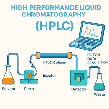
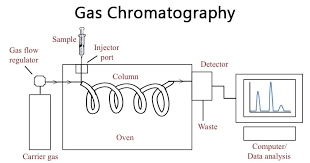
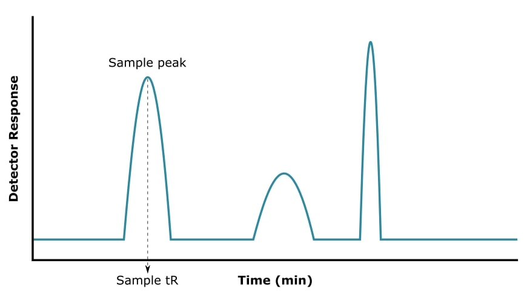
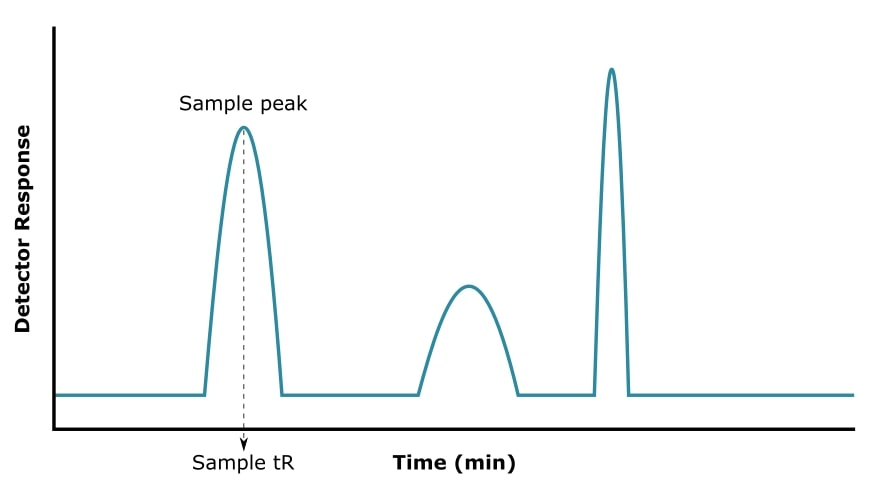

Chromatography Concepts
Chromatography is a key analytical technique used to separate, identify, and analyze chemical components in mixtures.
Chromatography separates mixtures based on differential partitioning between a mobile phase and a stationary phase. The retention factor (Rf) describes how far a compound travels relative to the solvent front.

TLC uses a thin layer of adsorbent (usually silica gel) coated on a plate. Compounds are spotted, developed in a solvent, and analyzed using Rf values.

HPLC uses high pressure to force a liquid mobile phase through a packed column. Detectors measure absorbance, fluorescence, or other signals.

Gas chromatography separates volatile compounds using an inert carrier gas such as helium. Detection is commonly performed using a flame ionization detector (FID).
 
